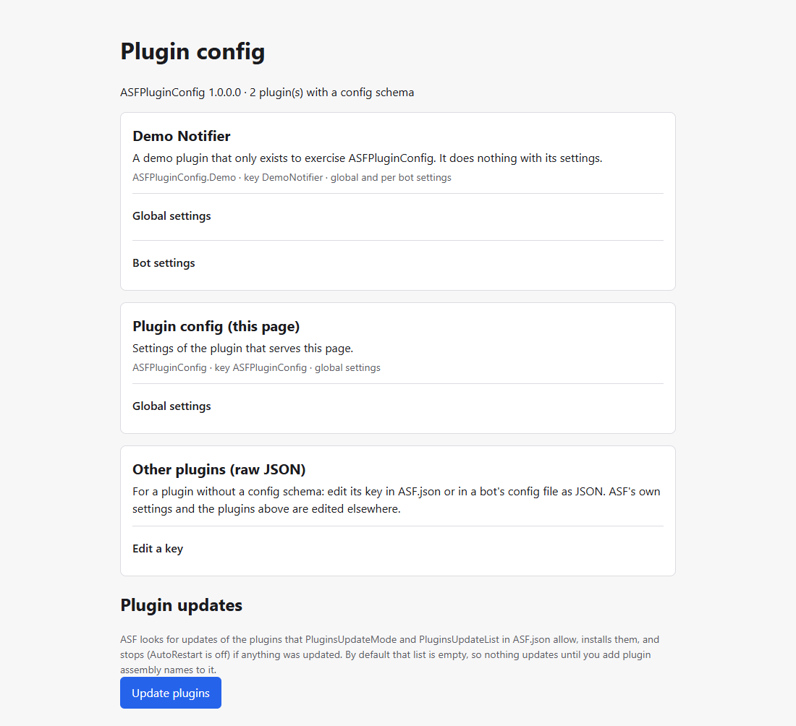

What it is
ASF Plugins: ASF-Notifier, which posts to a Matrix room when a bot stops, loses its connection, finishes farming or ASF is updated, and ASF-PluginConfig, a settings page for ASF plugins. Free, open source, Apache-2.0.
At a glance
- Built against
- ArchiSteamFarm 6.3.10.6 (ASF-Notifier) and 6.3.11.7 (ASF-PluginConfig), with the .NET runtime ASF ships with
- Licence
- Apache-2.0
Shipping, 1.1.2.0. Open source under Apache-2.0.
ASF-Notifier
Hear about it when a bot stops. An ArchiSteamFarm plugin that posts to a Matrix room when a bot is stopped, loses its connection and comes back, finishes farming, or ASF is updated.
Shipping, 1.0.0.0. Open source under Apache-2.0.
ASF-PluginConfig
One page to edit the settings of the other installed plugins. A plugin that embeds a JSON Schema gets a form; one without gets a raw JSON editor for its key.
